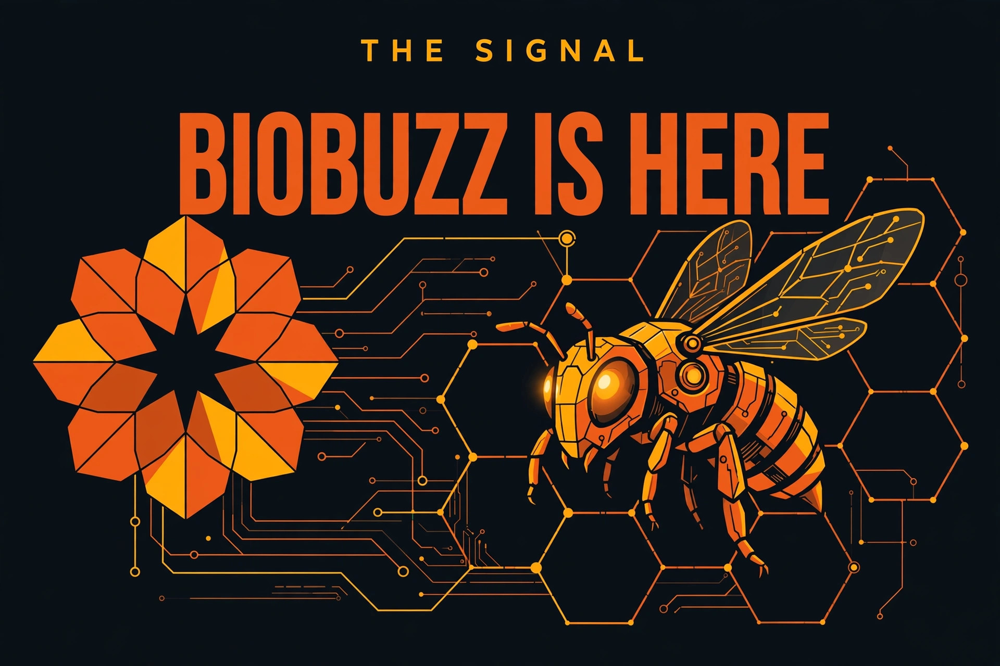

The Signal · Edition 1 · September 2026
BIOBUZZ Is Here: What the New FTC Season Demands
Published September 23, 2026 · Read on LinkedIn

The 2026-27 FIRST Tech Challenge season kicked off on September 12, and the game is BIOBUZZ. The theme is pollination. The challenge is precision. And the rulebook just changed how it wants to be read.
Here's what matters, in plain language.
The game
Two alliances, two teams each. Forty yellow POLLEN balls and sixteen alliance-colored NECTAR balls. Three scoring structures:
- The HIVE sits at field center. Each alliance has a two-chambered hive on a pivot. Launch scoring elements into the upward-facing chamber, and when enough weight lands, it tips — 20 points per tip. Every tip also unlocks one more NECTAR from your staging area. Your launcher is your season.
- The FLOWERS hang on the walls, and they only score in the last 60 seconds. Load them from the top. Here's the twist: whoever's NECTAR sits top-most owns the flower — and the owner scores 2 points for every element inside, no matter who put it there. The final minute isn't an endgame. It's the whole match, compressed.
- The GARDENS in the corners pay 1 point per element, but they're unprotected. Anything you leave there can be stolen.
Matches run 30 seconds of autonomous, an 8-second transition, then 2 minutes driver-controlled.
The rule changes worth coaching
- Four elements, that's it. Robots can control at most four scoring elements at once, and hoarding to deny opponents is its own major foul. Cycle speed beats stockpiling this year.
- Let it land. When a hive tips, spilled elements must hit the floor before anyone collects them. No camping under the hive with an open intake.
- Flowers are gated. NECTAR entering a flower before the last 60 seconds is a major foul per element. Practice the endgame as an endgame.
- One legal way to tip a hive: launching into the upward chamber. Ramming the frame is a foul.
- The human player is a real position now. NECTAR enters one-per-tip, or all-remaining under 60 seconds, only through the loading zone, no tools. Train that person.
- Autonomous pays: leave the wall (3), park (5), tip a hive (20) — and 16 combined leave-and-park points across the alliance earns a ranking point.
Robot constraints, for the builders: start inside an 18-inch cube, expand to 18x24x29, no weight limit, max 8 motors and 8 servos.
The real story: the rulebook grew up
Buried in section 1.4.1 is the season's biggest change, and it isn't a game mechanic. FIRST rewrote the manual's philosophy: rules now emphasize the spirit of the rule and the intended gameplay, and event volunteers are empowered to make good-faith judgment calls instead of logging every incident.
That's a bet on human judgment over legalism — and it changes how every team should read every rule this season. Don't hunt loopholes. Ask what the rule is protecting, and build for that. We'll be coaching it as a habit, not a footnote.
What we're doing about it
Our fall cohort isn't rebuilding season prep from scratch. We've turned the manual into a starter kit: the rule changes that matter, eight targeted drills (launcher accuracy, spill recovery, the 60-second flower sprint, possession discipline, autonomous routines), and a four-week practice plan that ends in full scrimmages with refs calling the real fouls.
Month one is about three things: a launcher that tips hives, an autonomous routine that banks points, and an endgame that wins the last minute.
The Signal is the newsletter of Detroit Automation Academy — where Detroit builds what's next. New editions monthly. If you know a young builder who should be in the room, send them our way.